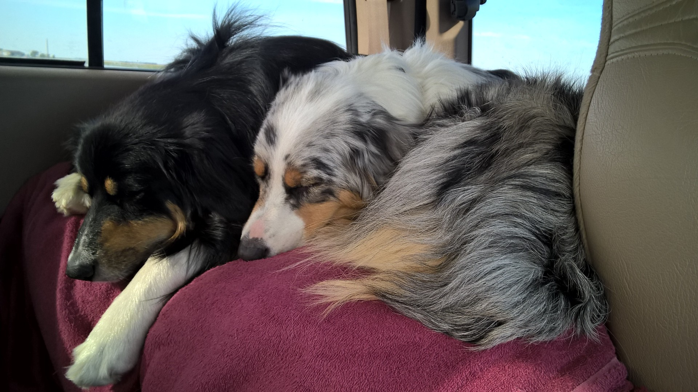
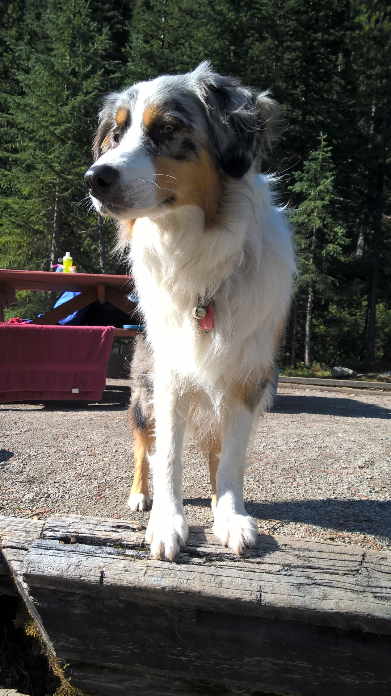
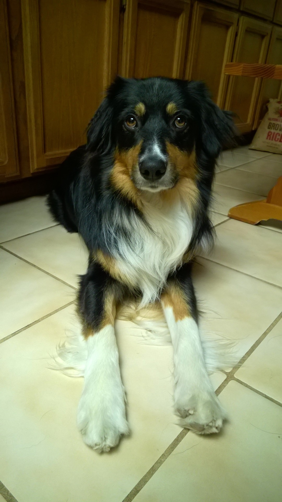

Hi, my name is Nikki and I live in the San Francisco Bay Area.
I grew up with Aussies all of my life and consider myself thoroughly
obsessed with the dog breed. For the past several years, we’ve had
two Aussies at a time, so that they can keep each other company and
play together.
My Aussies
Our current two Aussies are a Blue Merle and a Black Tri: Mika and
Marco, respectively.



History Page
Location
Aussies, although their name seems to suggest the continent of Australia,
are actually an American breed. Because of this fact, some have tried to
change their name to “American Shepherds,” but that movement has yet to
win the hearts of all Aussie lovers.
About Page
Coats
Aussies come in 4 primary coats, or fur patterns:
Blue Merle
Red Merle
Black Tri
Red Tri
The Merle patterns are characterized by bodies mostly covered with a
lighter, non-white color that is speckles and splotches of darker shades.
For Blue Merles, the lighter color is a shade of grey that is then filled
with black spots. For Red Merles, the lighter color is a shade of tan
that is then filled with brown spots.
The Tri color patterns are characterized by bodies mostly covered with
the primary color (either black or reddish brown) that is then accented
with two other colors: white and caramel. This combination of three is
what gives the pattern its name.